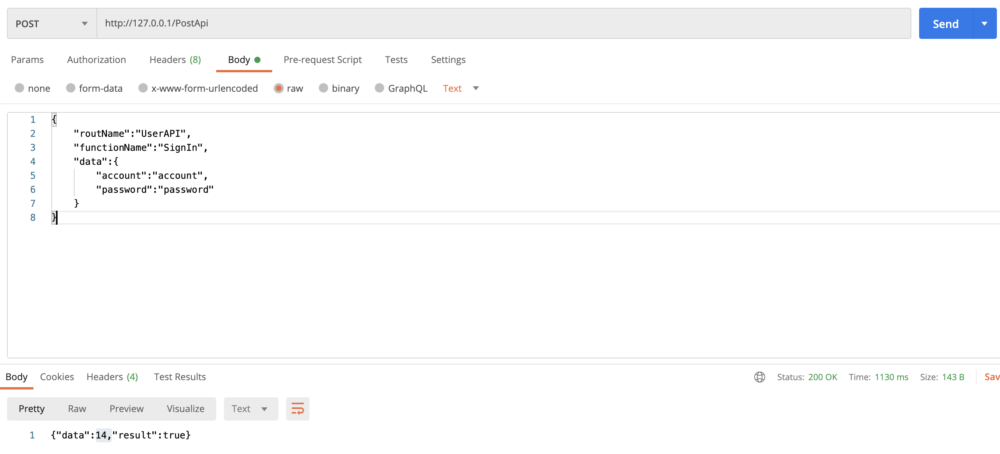

<!DOCTYPE html>
<html lang="en">
<head>
    <meta charset="UTF-8">
    <title>Title</title>
    <script src="../glitterBundle/ControlInstance.js"></script>
    <link href="../glitterBundle/bootstrap.css" rel="stylesheet">
    <link href="../fontawesome-free-5.15.4-web/css/all.min.css" rel="stylesheet">
    <script src="https://cdn.jsdelivr.net/npm/marked/marked.min.js"></script>

    <link rel="stylesheet" href="https://cdnjs.cloudflare.com/ajax/libs/highlight.js/10.7.1/styles/xcode.min.css">
    <script src="https://cdnjs.cloudflare.com/ajax/libs/highlight.js/10.7.1/highlight.min.js"></script>
    <!-- and it's easy to individually load additional languages -->
    <script src="https://cdnjs.cloudflare.com/ajax/libs/highlight.js/10.7.1/languages/go.min.js"></script>
    <link href="../css/article.css" rel="stylesheet">
</head>
<body>
<script>
    lifeCycle.onCreate = function () {
        hljs.highlightAll();

    }
    lifeCycle.onCreateView = function () {
        return `
        <h3 style="font-size: 39px;font-weight: 400;">開發API</h3>
    <div style="height: 1px;width: 100%;background-color: whitesmoke;margin-top: 20px;margin-bottom: 10px;"></div>
<span>[Ktor] - 使用ApiInterface添加後端API．</span><br><br>
 <span style="color: #2a93b9;"> 參數:(rout,functionName)</span><br><br>
          <span style="color: #0062c0;"> [rout]</sapn><span>-API路徑</span><br><br>
          <span style="color: #0062c0;"> [functionName]</sapn><span>-API名稱.</span><br><br>
<span>範例:登入API</span>
 <br><br>
${glitter.share.code.kotlin(`//添加API接口
ApiInterFace("UserAPI", "SignIn"){
request->
//使用request.receiveValue取得資料內容
val account=request.receiveValue["account"]
val password=request.receiveValue["password"]

/**
*執行SQL判斷並且撈取UserData的值
*/
//Your Code
/**********************/

//判斷帳號密碼正確，則返回result為true的值，以及用戶資料
request.responseValue["userData"]=userData
request.responseValue["result"]=true
}`)}
 <br> <div style="height: 1px;width: 100%;background-color: whitesmoke;margin-top: 20px;margin-bottom: 10px;"></div>
 <span>[Gliiter] - 在Glitter專案中使用postRequest即可執行後端API．</span>
<br><br>
${glitter.share.code.js(`//在Entry中先定義好你的後端路徑
glitter.webUrl='http://127.0.0.1'
//呼叫後端API
glitter.postRequest('UserAPI','SignIn',{
    account:'account',
    password:'password'
},function (response){
    if(response){
        alert('登入結果'+response.result)
    }else{
        //網路連線異常
        alert('網路連線異常')
    }
})
`)}
<br>
<div style="height: 1px;width: 100%;background-color: whitesmoke;margin-top: 20px;margin-bottom: 10px;"></div>
 <span>[Restful API] - 或者在任何應用使用Restful API方式進行呼叫，下方以Postman作爲示例．</span>
<br><br>
 
<br><br>
`
    }

</script>
</body>
</html>